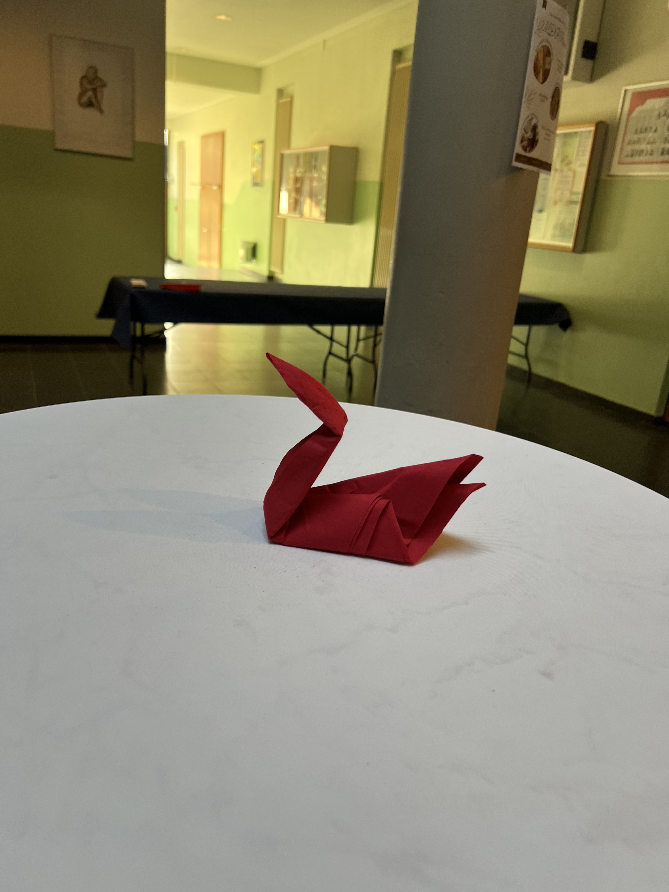

Catering MDR Preview
Am vergangenen 26.10. hatten wir als Team von Häppchen Sag die besondere Ehre, das Catering für das MDR Preview im Fallstein-Gymnasium in Osterwieck zu übernehmen. Dieses Event war ein großartiges Erlebnis für uns – die Atmosphäre war lebendig, die Gäste waren begeistert und wir konnten unser Catering-Angebot im besten Licht präsentieren!
Für diesen Anlass haben wir eine Auswahl an leckeren Snacks und Getränken vorbereitet, die sowohl für das Auge als auch für den Gaumen ansprechend waren. Das Menü beinhaltete köstliche Blätterteig-Kringel, die frisch gebacken und mit aromatischen Füllungen verfeinert wurden. Unsere Baguettes – die als Sandwiches angerichtet waren – kamen ebenfalls sehr gut an. Diese wurden mit verschiedenen Zutaten belegt, sodass für jeden Geschmack etwas dabei war.
Natürlich sorgten wir auch für eine passende Getränkeauswahl, die den Gästen eine kleine Erfrischung zwischen den Programmpunkten bot.
Es war uns eine Freude, zu diesem besonderen Event beitragen zu dürfen und so viele positive Rückmeldungen von den Gästen zu erhalten. Ein großes Dankeschön geht an das Fallstein-Gymnasium Osterwieck und den MDR für das Vertrauen in unser Team! Wir freuen uns auf viele weitere tolle Events in unserer Region und hoffen, dass wir auch in Zukunft mit unseren Häppchen begeistern können.